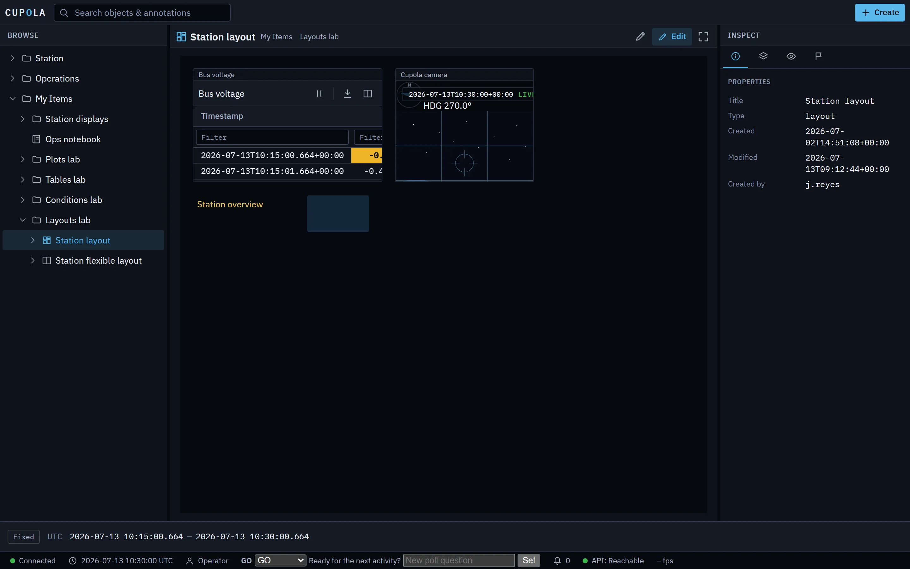

C09 · Layouts
Build the console your mission needs.
Compose telemetry, imagery, and widgets on a snap-to-grid canvas. Display layouts, flexible layouts, and tabs turn any object in the tree into an operator screen — saved and shared like any other object.
